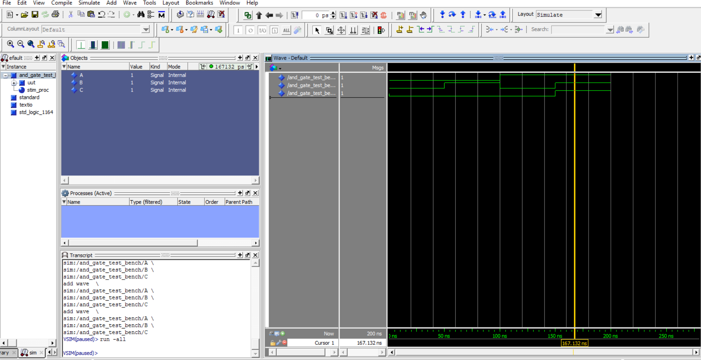
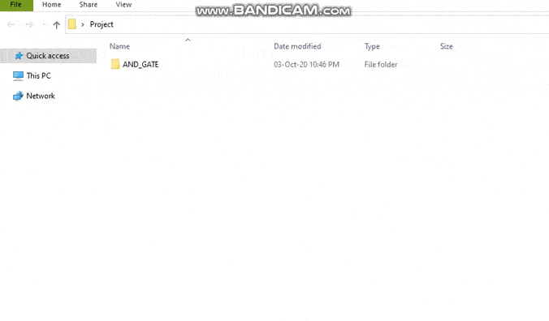

Task 0
The aim of this task is to get you started with installation of required software and to learn resources related to the software.
This task is divided into three parts :
This task is divided into three parts :
- Software Installation
- Verifying Installation
- Learning Resources
Note :
1. It is recommended in this theme to use Windows 10 OS.
2. We will be using Verilog HDL in the entire theme.
- Software Installation :
- Verifying Installation:
- Learning Resources :
- Add Ons :
- Submission Instructions :
-
Create a new folder named SM#<Team-ID>_Task0 as shown below.
- Move or copy AND_GATE project folder to this new folder. Refer above video.
- Now create SM#<Team-ID>_Task0.zip file. For Team ID = 6789, SM#6789_Task0.zip must be created. Refer above video.
- This zip file must be uploaded on the portal, upload Task 0 section.
- Upload the SM#<Team-ID>_Task0.zip file on the portal. You can view all your submissions, so kindly download your submitted file from portal to verify the above steps. If anything is missing, please change it and re-upload the SM#<Team-ID>_Task0.zip file before the deadline.
In this step, you will be downloading and installing Quartus Prime 19.1 along with Modelsim and Notepad++.
The detailed instructions for installing Quartus Prime and Modelsim are provided in the section Introduction & Installation. For downloading softwares you can
use any of the two methods mentioned in the "Introduction & Installation" section depending upon your internet connectivity.
In this section you will be verifying if you have properly installed the softwares. Start with Getting started with Quartus section and
then proceed with the Verifying Installation section. If your Modelsim simulation output matches with the output shown in below image
then installation is successful.

Refer the following tutorials to get started with the Verilog HDL, Quartus and Modelsim simulation environment.
a. Prerequisitesb. Verilog HDL Tutorials
c. Two Way Switch
Congratulations! If your output waveform on Modelsim matches with the above image, you are done with the Task 0.
Note: Refer the Submission Instructions section for what and how to submit the task.
Refer only after completing Task 0. Additional resources will help you in understanding how to design a digital circuit
using Verilog HDL. Also this will be helpful in all further tasks.

Ex. 1: If your Team ID = 6789 then your folder should be named as SM#6789_Task0.
Ex. 2: If your Team ID = 89 then your folder should be named as SM#0089_Task0.
Note : AND_GATE project must be simulated using TestBench and Nativelink Simulation(Modelsim) method. Submitting unsimulated project folder will result in zero marks.
NOTE: If there are any changes in these submission instructions, we will post the update on Piazza only. So, please stay tuned there !